01 / 11 · Mantreshvar
Adi Shakti Moja Majko
0:00 / 0:00
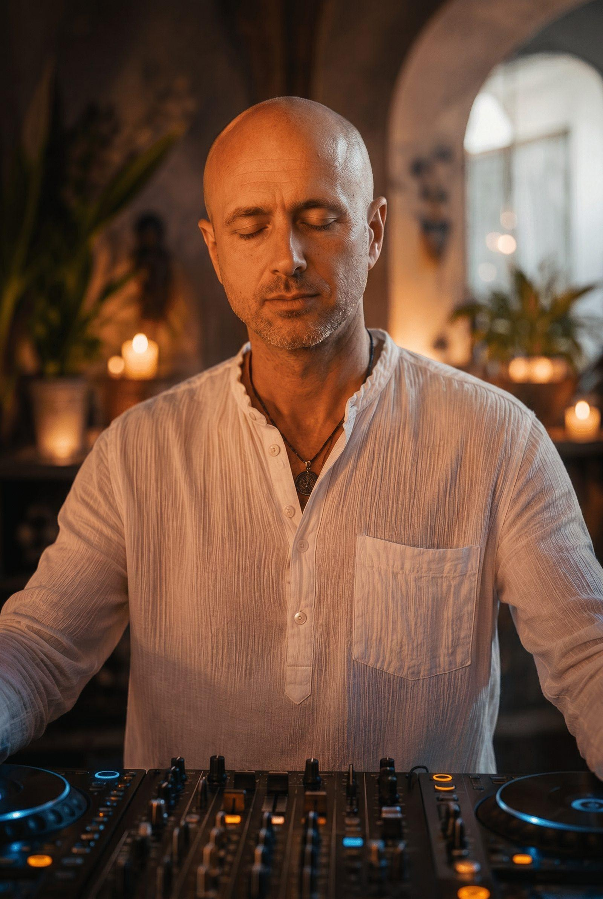
Marko Boško · Zagreb · Auroville
Od Gangesa do Amazone. Set je putovanje, ne popis pjesama.
Ecstatic dance demo, 4. listopada 2026. Jedan sat i pedeset tri minute, dvadeset šest pjesama, jedno putovanje od prvog daha do tišine.
Val ecstatic dance večeri: boja ispod valnog oblika je energija dijela
Snimam kao Mantreshwar, sviram kao DJ Mantra. Perkusionist, tonac i DJ, sedam godina u Aurovilleu u južnoj Indiji.
Počeo sam 1998. u Rijeci, kao radijski tehničar i noćni disk džokej. Sljedećih dvadeset sedam godina radio sam zvuk i sliku za hrvatske televizije, a između toga sedam godina živio u Aurovilleu u južnoj Indiji. Iz toga dolazi moja glazba.
Osnivač sam Tribal Jam Orchestre, world music ansambla iz Zagreba rođenog 21. prosinca 2011. Afričke i arapske udaraljke, indijanske flaute, didgeridoo, hang i gongovi, ono što zovemo plemenskim jazzom.
Ansambl je nastao iz jedne ideje: skupina ljudi koja nikad nije svirala zajedno može se uskladiti u jedan puls unutar nekoliko minuta, ako se ritam uči kroz tijelo, a ne kroz note.
Mantre i kirtan, građeni od glasa, flaute i ručnih udaraljki; Sounding Silence je moj mantra album. Organic house koji bubnjeve zapadne Afrike, Gangesa i Amazone nosi u jedan set. I bubnjevi uživo: okvirni bubanj, djembe, dundun i darbuka. Sve što radim cilja jedan trenutak, kad se soba puna stranaca uskladi u jedan puls.
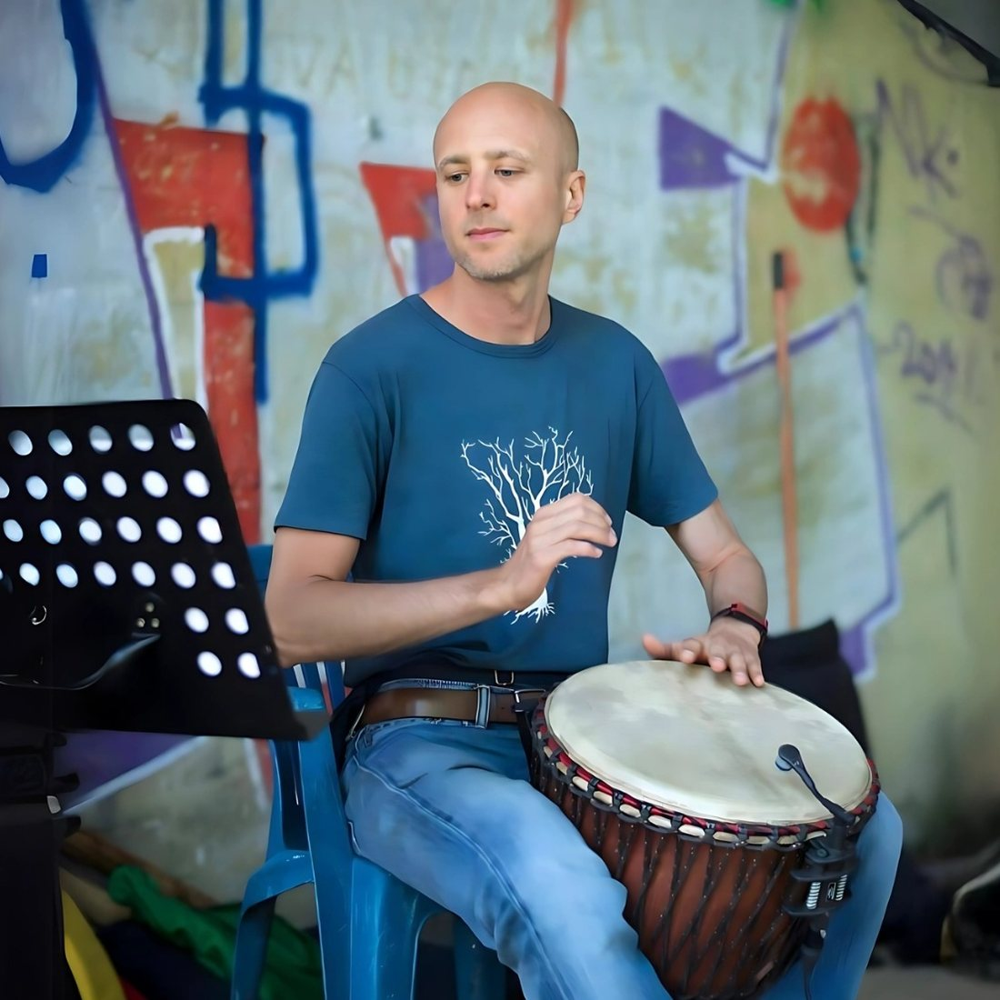
Neka glazba se ne stvara. Ona se sjeti. Sounding Silence je zbirka mantri koje sam primio tijekom godina života u Indiji i Aurovilleu i donio kući u Hrvatsku preko mora. Te melodije nisu počele sa mnom: izronile su iz tišine, prošle kroz mene i sad se vraćaju tebi, tražeći samo da ih se čuje u istoj tišini iz koje su došle. Deset prijenosa, drevni zvukovi u svom prvom obliku, sjeme koje još nije drvo.
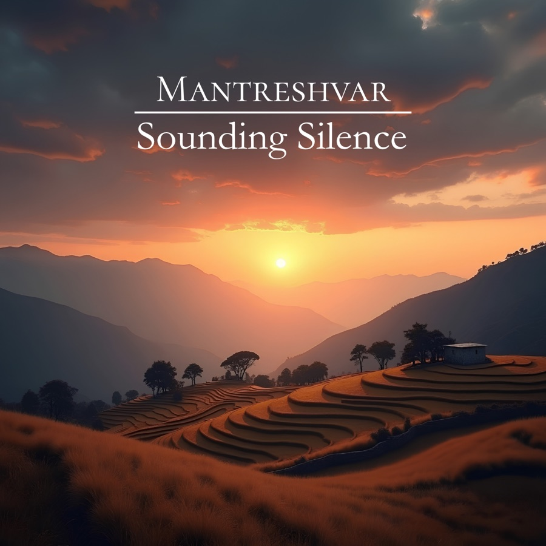
BonusSviramo fuziju plemenskih ritmova i smirujućih zvukova instrumenata za zvučno iscjeljenje. Ti zvukovi počivaju na božici ekstaze i transa. Djembe, okvirni bubanj, didgeridoo, gongovi i gitara.
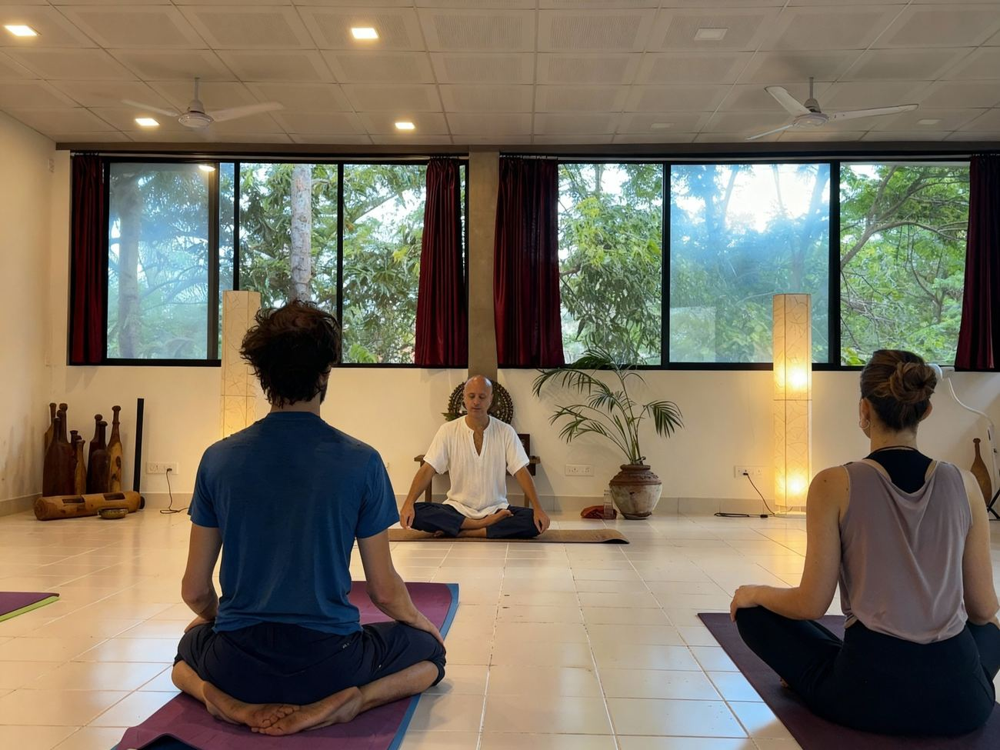
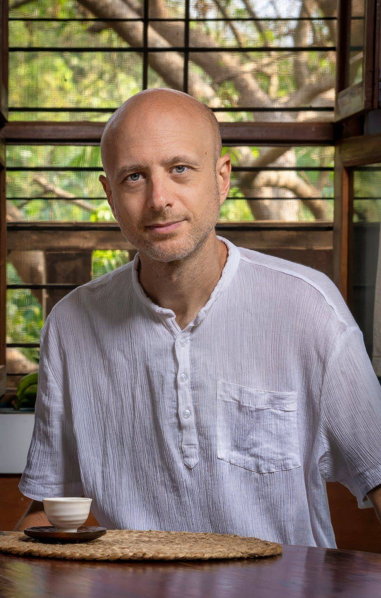
Sedam godina živio sam u Aurovilleu, međunarodnoj zajednici u južnoj Indiji nadahnutoj vizijom Sri Aurobinda. Ondje sam snimao zvučne vrtove i ručno izrađene instrumente, i počeo proučavati zvuk kao terapijsku modalnost, ne kao metaforu nego kao praksu.
Iz tog razdoblja nastala je Sun Moon Yoga metoda. Spaja sunce Vinyase s mjesecom Hatha yoge. Kreće se između sunčane i mjesečeve strane prakse, na dahu i pulsu bubnja. Tijelo se budi kroz pokret, um se smiruje kroz dah, duša pronalazi prostor tišine.
Praksa počinje toplo i polako, otvara kukove i kralježnicu, pa se diže u tok koji grije. Zatim se spušta u duže zadržane položaje gdje disanje preuzima vodstvo. Nema ogledala i nema natjecanja. Tko dolazi prvi put, prati vlastiti tempo.
Indijska sestra orkestra. Krug bubnjara, pjevača i plesača u studiju KalaBhumi u Aurovilleu.
Subotom u podne držali smo Dancing the Fire: plešemo i odmaramo uz živu glazbu kolektiva. Bubnjevi, glas i svi instrumenti koje ljudi donesu sa sobom.
Nedjeljom su bili satovi Rhythms for Evolution za djembe, u pet koraka: dah i ritam srca, svijest o tijelu, zapadnoafrički ritmovi, kreativnost i improvizacija, i na kraju krug bubnjeva. Bez prethodnog iskustva.
Svirao sam djembe i na Plesovima univerzalnog mira s Ashani Pluchino, u dvorani Maloka zajednice Anitya u Aurovilleu.
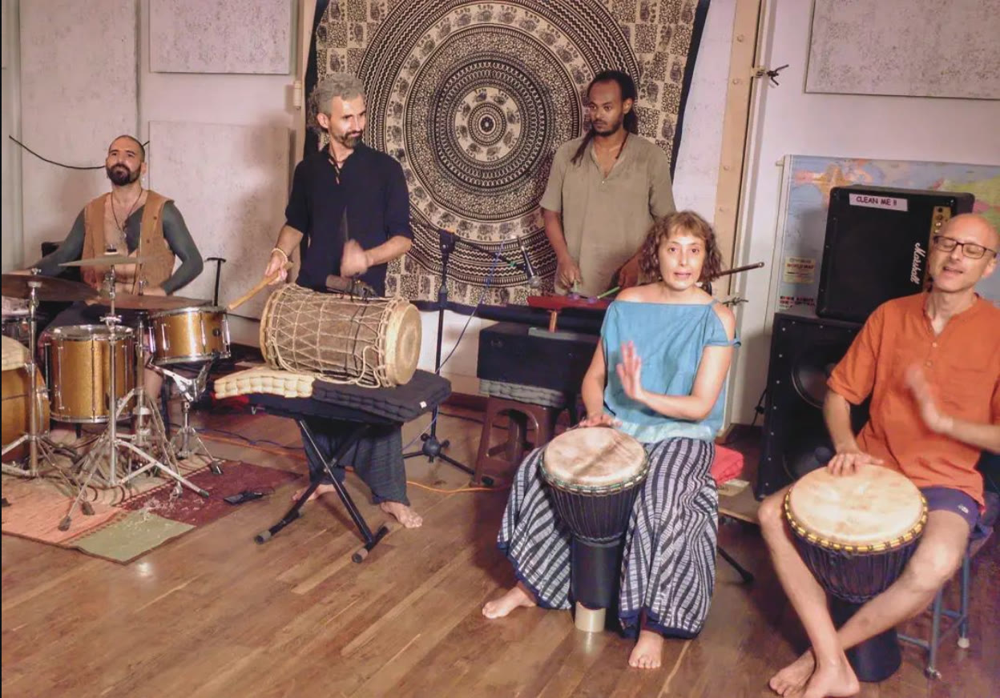
Večer ima tri dijela: otvaranje, ples i zatvaranje. Radim u sva tri. Ne tražim cijelu večer, svaki modul stoji sam za sebe. Vi odlučite što vam treba i gdje me staviti u program.
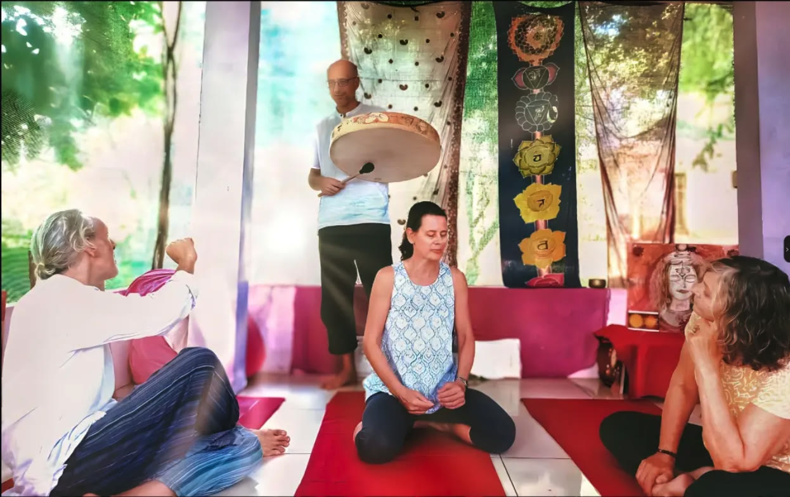
Prije plesa. Budimo tijelo, smirujemo um, otvaramo kanale.
Zagrijavanje kroz Sun Moon Yogu, sunce Vinyase i mjesec Hathe. Uz to pranayame: kapalabhati za buđenje, bhastrika za vatru, nadi shodhana za smirivanje i balans.
Vođenje prema svjetlu u srcu i svjetlu u glavi, uz sanskrtske mantre. Kratko, jednostavno, bez potrebe za iskustvom.
Zajedničko pjevanje vokala koje otvara energetske kanale i povezuje s pet elemenata. Glas kao alat, ne kao nastup. Nitko ne mora znati pjevati.
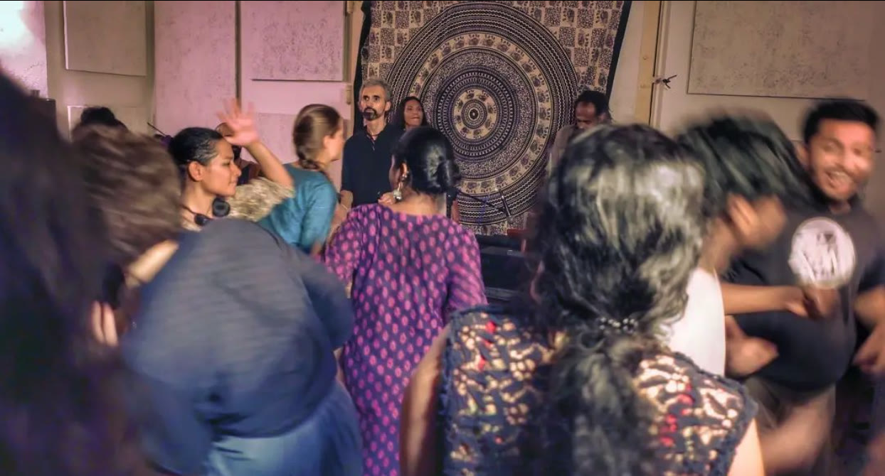
Srce večeri. Iz ploča ili iz ruku, ili oboje u isto vrijeme.
World organic house i etno elektronika, s bubnjevima zapadne Afrike, Gangesa i Amazone. Gradim luk iz duboke uzemljenosti prema vrhuncu pa meko natrag u tišinu. Mogu pokriti cijeli ples ili samo jedan dio.
Perkusije uživo, same ili preko seta. Okvirni bubanj, djembe, dundun, darbuka, shakeri. Mogu i voditi ritmičku radionicu prije plesa.
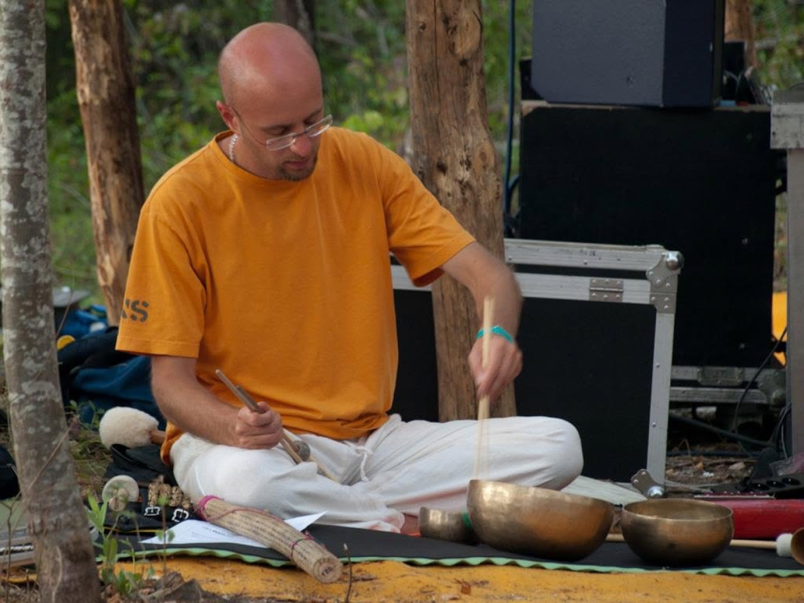
Poslije plesa. Ono što se otvorilo, zvuk slegne i zatvori.
Gongovi, zdjele, okvirni bubanj i glas. Ležeći, bez zadatka. Ono što je ples otvorio, zvuk slegne i zatvori.
Toniranje nije pjevanje. Držimo jedan vokal i puštamo ga da vibrira u tijelu. Svaki vokal ima svoje mjesto, svoju kvalitetu i svoj element. Slova nisu slučajna.
Usmjeravamo pažnju na zdjelicu.
Početak, tlo na kojem stojimo. Otvoren zvuk, otvorena usta, težina koja pada u stopala.
Usmjeravamo pažnju na sredinu zdjelice.
U je oblik čaše koja drži vodu, a voda je ono što stvara. Zvuk se skuplja i produbljuje.
Usmjeravamo pažnju na pupak.
Zvuk se projicira prema van. Vatrom idemo kroz život i postižemo ono što želimo postići.
Usmjeravamo pažnju na prsa, na područje srca.
Krug. Nema početka ni kraja, svi smo jedno. Zvuk se širi u prsima i dalje u prostor.
Usmjeravamo pažnju na grlo.
Spajamo sva četiri vokala u jedan neprekinuti zvuk. Iz toga se rađaju alikvoti, viši tonovi iznad tona. Grlo, iskrenost, ono što stvarno imamo za reći.
Usmjeravamo pažnju na sredinu glave, gdje je sjedište trećeg oka.
Zvuk koji sadrži sve prethodne. Pažnja se penje iza očiju i smiruje.
Usmjeravamo pažnju na tjeme, vezu između nas i ostatka svemira.
Na kraju ne pjevamo. Sjedimo u onome što je ostalo i osjećamo da je sve povezano sa svime.
Rhythms for Evolution je moja praksa u kojoj se spajaju bubnjevi, pokret, glas, svjesni ples i DJ setovi. Istražujemo drevni puls koji nas sve povezuje.
Sve se okreće. Sve se razvija. Namjera, rezonancija, melodija, ritam, dah, tok. Tim redom i uvijek iznova.
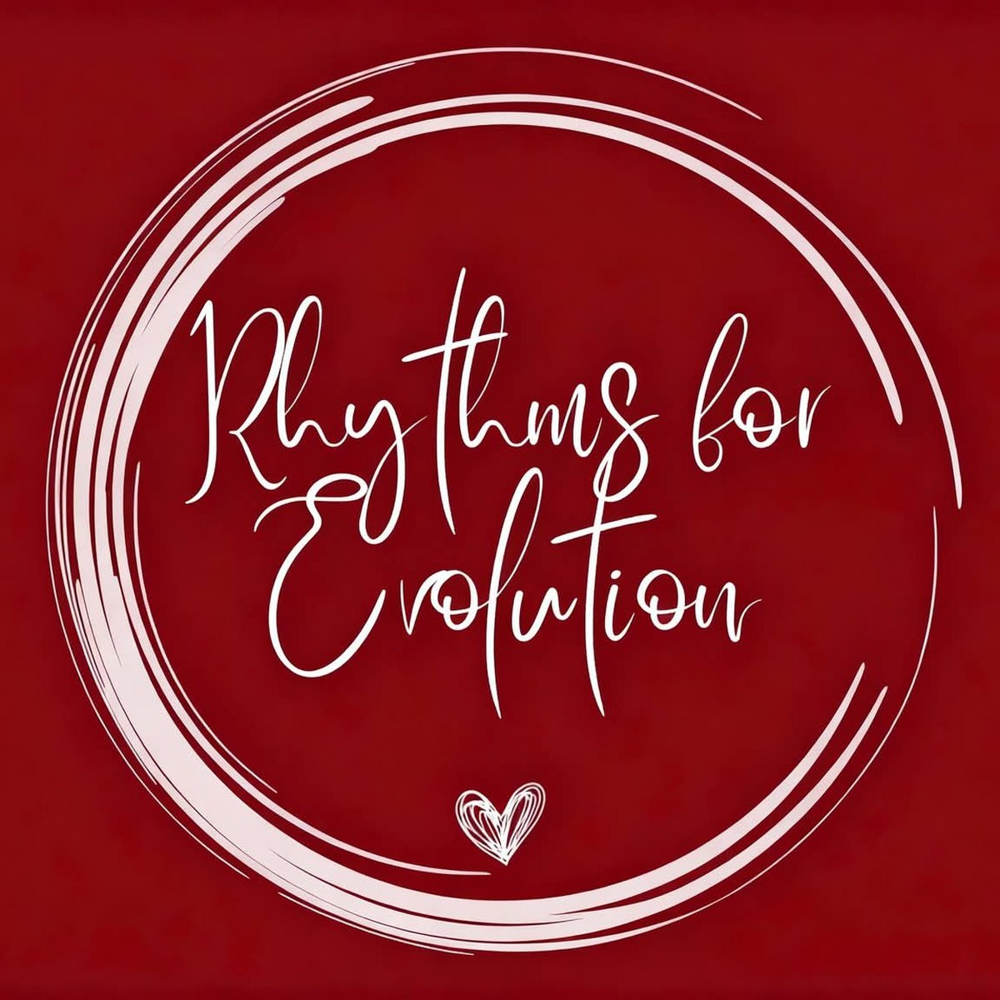
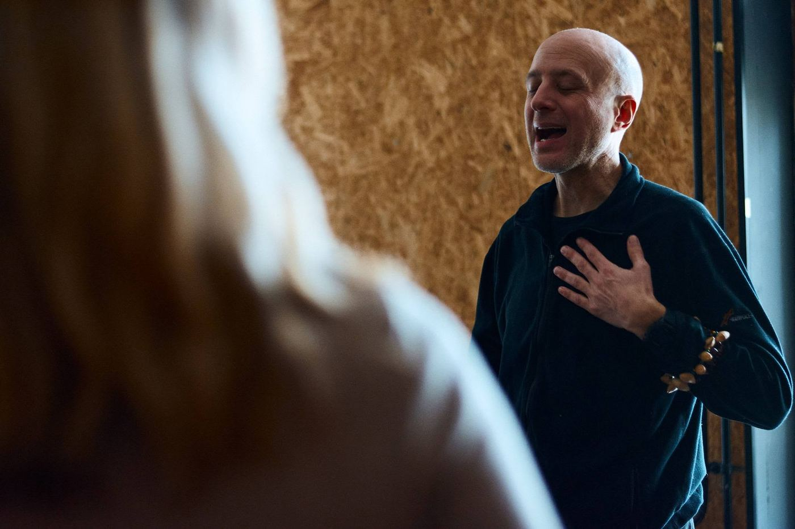
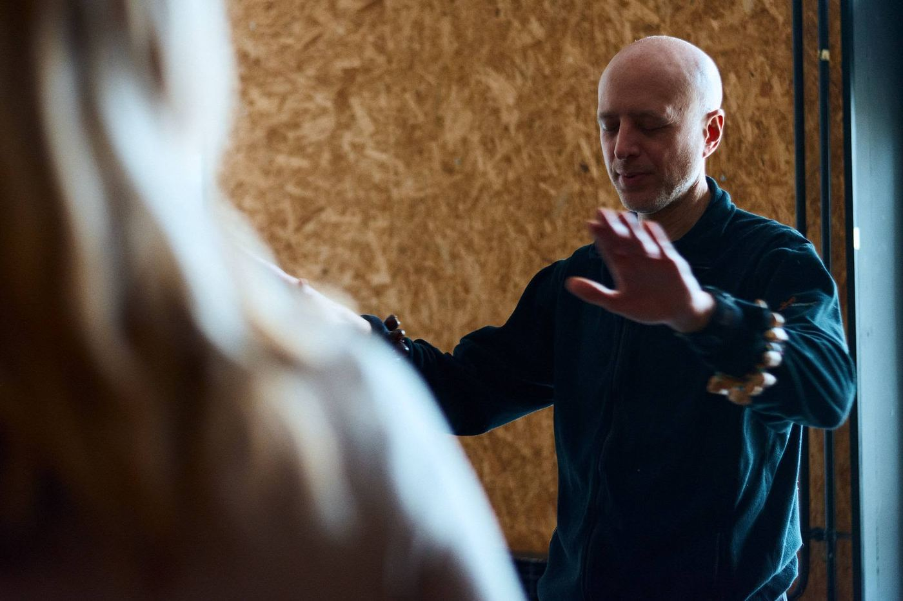
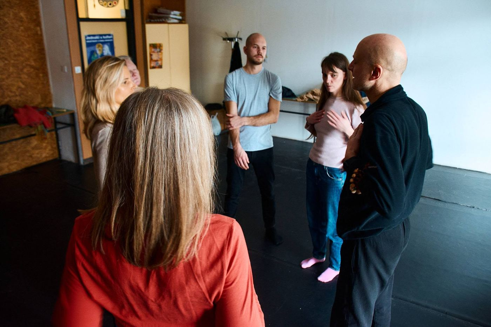
Učio sam kod perkusionističkih majstora u Hrvatskoj, Sloveniji i Izraelu, te kod gostujućih zapadnoafričkih virtuoza. Danas studiram okvirni bubanj kod Yshaija Aftermana, jednog od vodećih svjetskih svirača i učitelja frame druma.
Dvadeset sedam godina radio sam zvuk i sliku za hrvatske televizije, pa znam kako zvuk putuje prostorom i što tehnička ekipa treba iz DJ pulta. Stajao sam s obje strane.
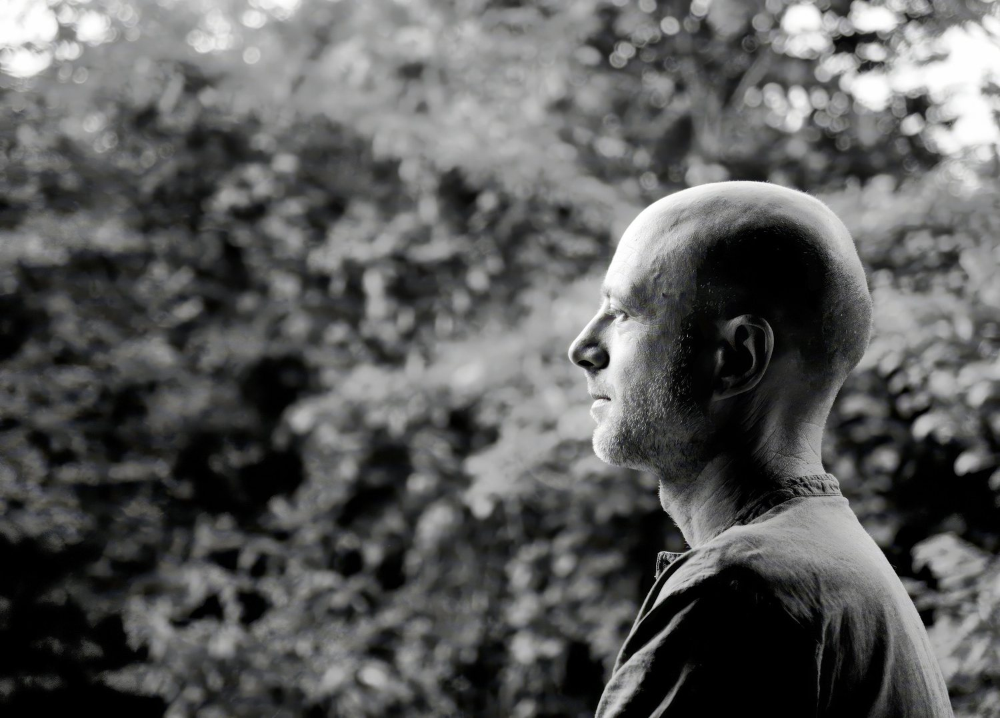
Ritam nije nešto što se nauči. Ritam je nešto čega se sjetiš.
Marko Boško · Mantreshwar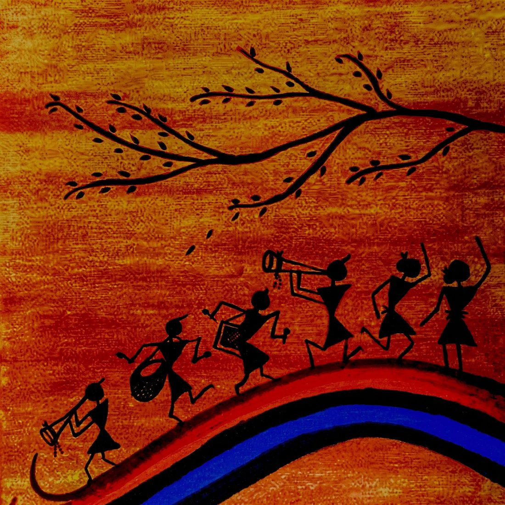
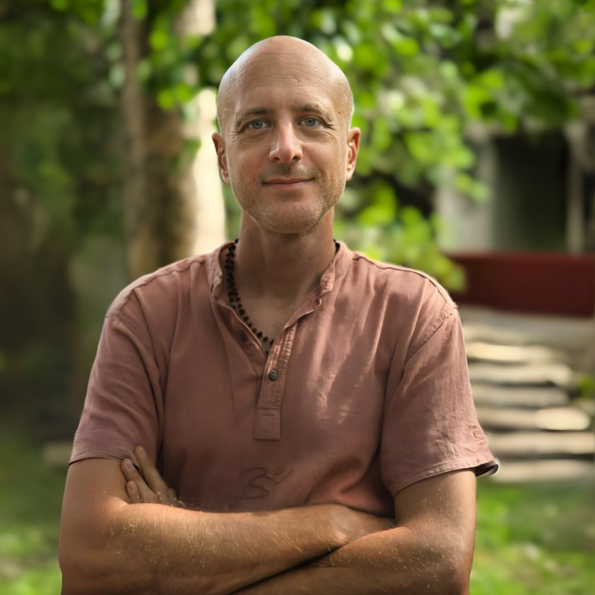
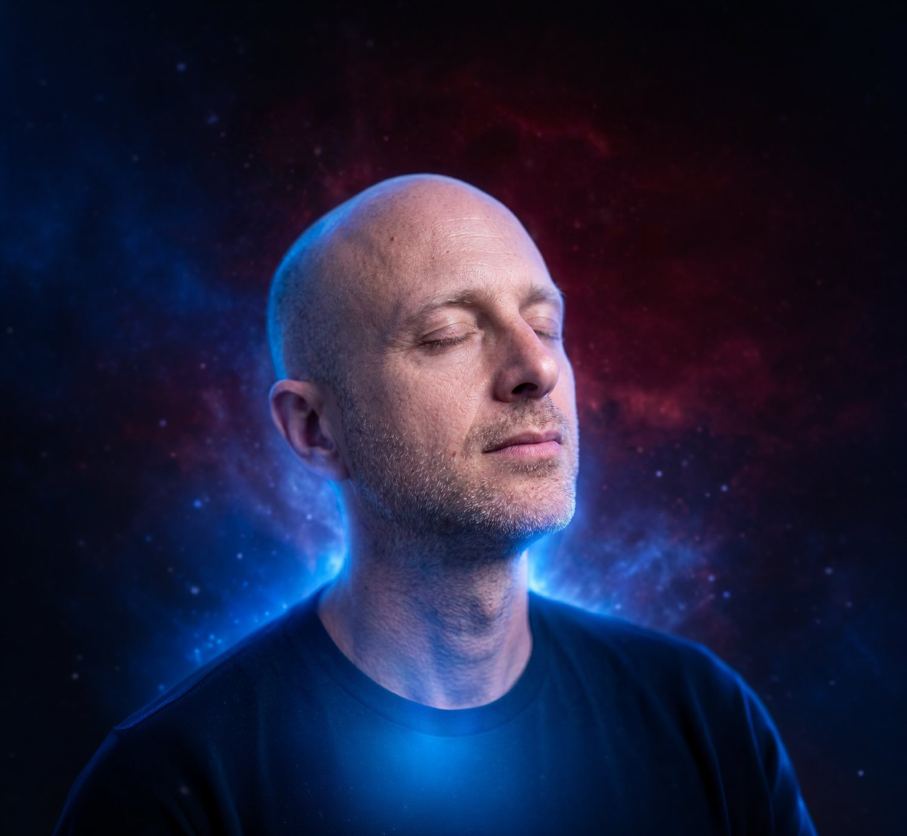
Sam programiram vlastitu DJ aplikaciju za Android mobitele, na otvorenom motoru Mixxx. Zamišljena je za mobilnog DJ-a: kontroler Hercules DJControl Mix Ultra preko Bluetootha, glavni izlaz na Bluetooth zvučnik i slušalice na USB, svaka tipka na bilo koju funkciju.
Kod je otvoren i besplatan (GPL). Kad bude spremna, svaki DJ će je moći preuzeti za svoj mobitel. Ovdje pratim napredak, korak po korak.
Dostupan sam za ecstatic dance večeri, zvučne kupke, radionice ritma i yoge i pokreta. Baza mi je Zagreb, spreman sam na put.